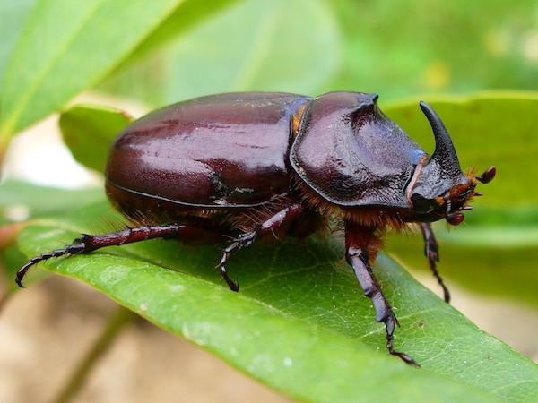

INSECT HOUSE
A healthy, organic vegetable garden should be alive with activity, buzzing with bees, butterflies, spiders, hoverflies and wasps. The more of these beneficial insects you have, the healthier the garden, and the less work there is to do. To invite them and make them stay, offer them accommodation in an insect hotel
WHERE WILL YOU FIND IT?
The Insect house is at EAST of the main entrance.